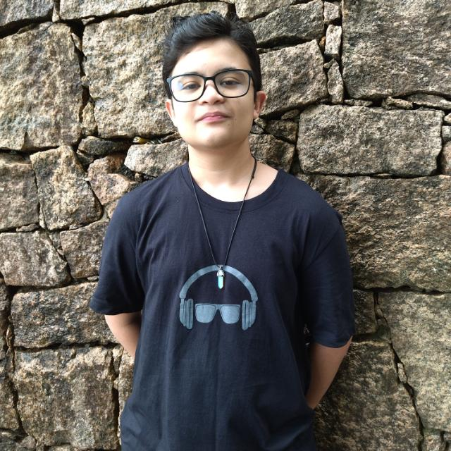

Sobre Mim
Meu nome é Rafael Santiago da Silva. Sou do Brasil, da cidade de Morungaba no estado de São Paulo. Tenho 15 anos, atualmente no primeiro ano do Ensino Médio na ETEC Rosa Perrone Scavone, de Itatiba-SP. Faço também na mesma escola, integrado ao Ensino Médio, um curso técnico de Desenvolvimento de Sistemas. Gosto muito de toda a culutra nerd, no geral. Desde RPGs de mesa até videogames.
Minhas Habilidades

Tenho poucas habilidades referentes a esta área, pois sou novo nela. Mas entre elas estão:
- Conhecimentos básicos em HTML e CSS;
- Conhecimentos básicos em Linguagem C e lógica de Programação;
- Conhecimentos intermediários em modelagem de banco de dados usando o brModelo;
- Conhecimentos inicias em Análise de Sistemas;
- Conhecimentos inicias em Canva e Corel Drawn;
- Conhecimentos inicias em design e UX.
Meus Conhecimentos

Procuro sempre estar conhcendo cada vez mais sobre programção, através de vídeos online, cursos online, lives e da própria escola mesmo. Procuro sempre estar participando de eventos envolvendo a área, como OBI e Maratona de Programação do Centro Paula Souza.
Minha Motivação

Meu primeiro contato com a programação foi na Rosa Perrone. Após isso, criei um grande gosto pela área. Acho que rende muitas oportunidades e dinheiro também. Hoje, quero ser programador. Durante o Ensino Médio buscarei qual área tenho mais apitidão, seja o Frontend, Backend. Database, Desevolvimento de Jogos etc. Planejeo ingressar Na FATEC de Itatiba e realizar o Curso de Desenvolvimento de Multimidia.